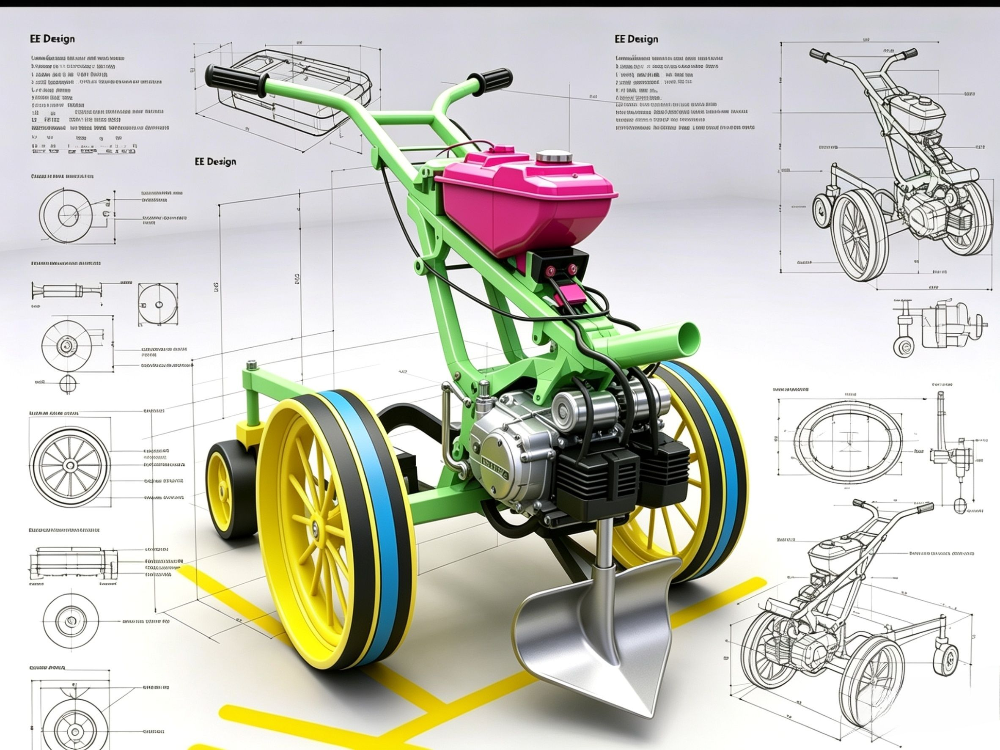

📋 Tentang Proyek Ini
Alat pertanian ringan dirancang khusus untuk membajak lahan sempit, kebun, sawah petak kecil, dan perkebunan campuran. Dibuat sepenuhnya menggunakan komponen mudah didapat di sekitar ki[...]
Desain disesuaikan persis dengan permintaanmu:
- ✅ Tangki bensin diperkecil, bentuk pipih, terpasang rapi tidak menonjol
- ✅ Roda utama penggerak cengkeram tanah kuat
- ✅ Roda bantu di belakang agar mudah dipindahkan di jalan rata
- ✅ Pijakan kaki lebar di belakang, kamu bisa berdiri saat berjalan
- ✅ Rangka ringkas, kokoh, mudah dilas sendiri
🎨 Galeri Desain 3D & Tampilan
BERIKUT ADALAH CONTOH DESIGN GAMBAR YANG SAYA BUAT:


🛠️ Spesifikasi Lengkap & Ukuran
| Bagian | Ukuran & Keterangan |
|---|---|
| Mesin Penggerak | 4-Tak Honda Supra Fit 100–125cc |
| Panjang Total | 1.700 mm (1,7 meter) |
| Lebar Total | 850 mm |
| Tinggi Stang | 950 mm |
| Roda Utama | Diameter 600 mm, lebar 120 mm + pelat cengkeram |
| Roda Depan | Diameter 200 mm, bisa atur kedalaman bajak |
| Roda Belakang Bantu | Diameter 250 mm, ringan kokoh |
| Tangki Bensin | 5 Liter, bentuk pipih rapi |
| Bahan Rangka | Besi Kotak 25×50 mm Tebal 2,5 mm |
| Mata Bajak | Bisa dilepas pasang, kedalaman maks 20 cm |
📝 Langkah Pembuatan
- Siapkan semua bahan, bersihkan mesin bekas Supra Fit
- Potong dan las rangka sesuai ukuran di atas
- Pasang dudukan mesin dan sejajarkan dengan poros roda
- Pasang tangki bensin rapi, sambung selang dan saluran bahan bakar
- Pasang roda utama, roda depan, roda bantu belakang & pijakan kaki
- Rakit stang, kabel gas, kopling, dan sakelar mati mesin
- Uji coba nyalakan, atur kecepatan, baru coba membajak tanah
⚠️ Peringatan: Gunakan sarung tangan dan pelindung mata saat mengelas atau mencoba mesin ya!
💰 Estimasi Biaya Pembuatan
- Mesin Bekas Supra Fit: Rp 1.000.000 – 1.500.000
- Besi Rangka & Las: Rp 800.000 – 1.200.000
- Roda & Poros: Rp 700.000 – 1.000.000
- Tangki, Mata Bajak & Perlengkapan Lain: Rp 500.000 – 800.000
- Total: Sekitar Rp 3 – 4,5 Juta
Jauh lebih murah dibanding traktor mini baru yang harganya bisa mencapai 15–20 juta rupiah!
⭐ Keunggulan & Siap Dijual
- 💸 Harga terjangkau untuk petani kecil
- 🔧 Suku cadang ada di setiap bengkel motor se-Indonesia
- 🌿 Irit bensin, cukup 1 liter untuk kerja berjam-jam
- 🛠️ Perbaikan mudah, bisa dikerjakan sendiri
- 🏞️ Bisa masuk lahan sempit yang traktor besar tidak lewat
- 🚛 Mudah diangkut, muat di bak pikap atau mobil
💡 Ide Tambahan: Nanti bisa ditambah aksesoris gerobak angkut atau penyiang rumput agar nilainya makin tinggi!